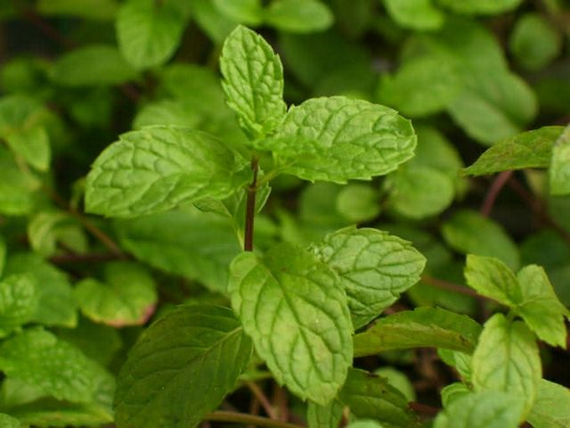

Menta
Mentha piperita
La menta es un híbrido de menta acuática y hierbabuena.
Propiedades y Beneficios
La menta ha sido valorada desde tiempos ancestrales por sus propiedades medicinales y su fresco aroma. Es un excelente **carminativo** que ayuda a expulsar los gases y tiene un efecto **antiespasmódico** que alivia los cólicos y espasmos intestinales.
Además, el mentol presente en sus hojas tiene un efecto refrescante, siendo útil para aliviar dolores de cabeza leves y como descongestionante natural en casos de resfriados.
Uso Tradicional Maya
Aunque no es nativa de la región, la menta fue rápidamente adoptada por sus beneficios digestivos. Era utilizada como un remedio rápido para indigestiones después de comidas pesadas con maíz o frijol. También se frotaban sus hojas en las sienes para calmar la mente y ayudar a la concentración.
Receta: Infusión para el Descanso
- Ingredientes: 2 cucharadas de hojas de menta fresca y 1 taza de agua.
- Preparación: Colocar las hojas en una olla con agua y dejar hervir durante **2 minutos**. Retirar del fuego y dejar reposar 5 minutos.
- Aplicación: Servir colando las hojas. Tomar **media hora antes de dormir**. Beber todas las noches, mínimo durante tres semanas, para promover un sueño reparador.